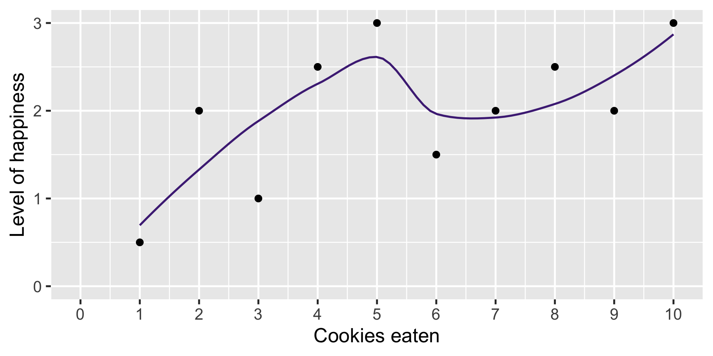
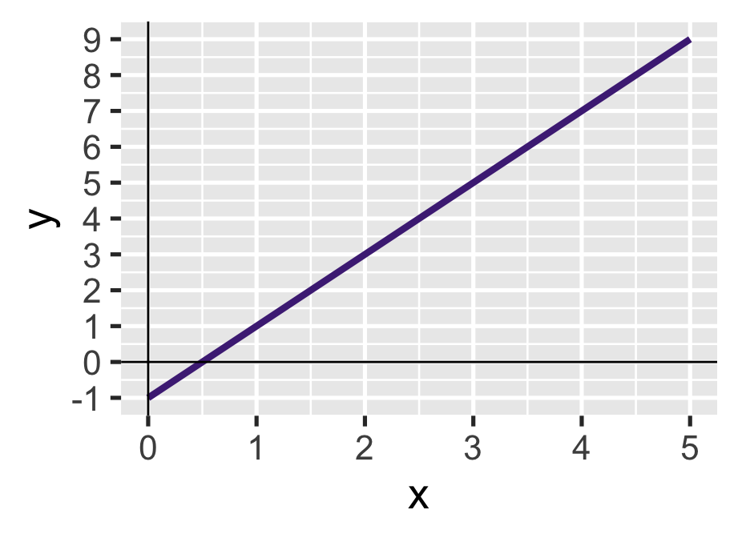
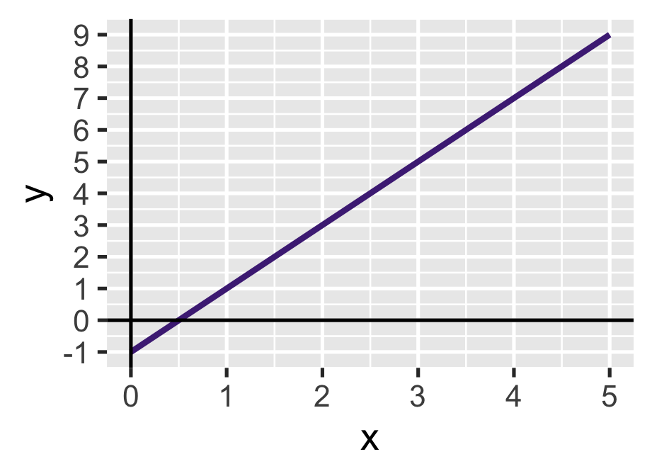
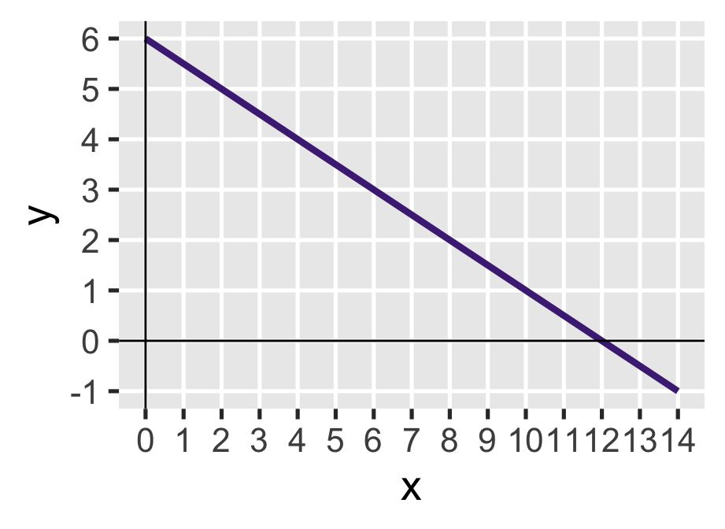
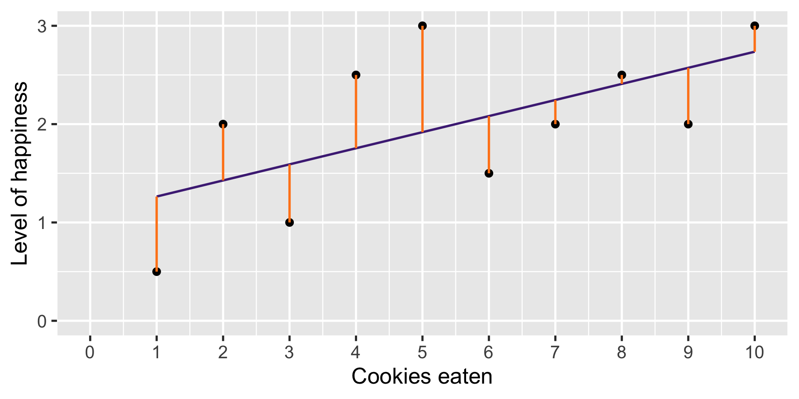
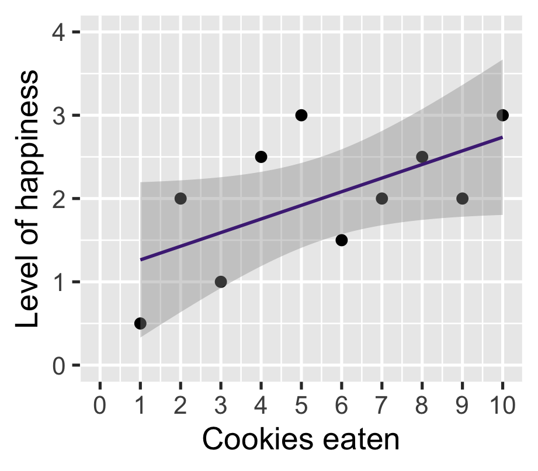
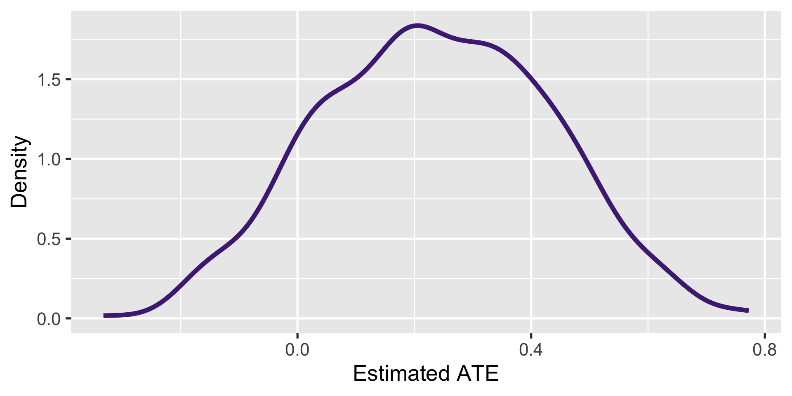
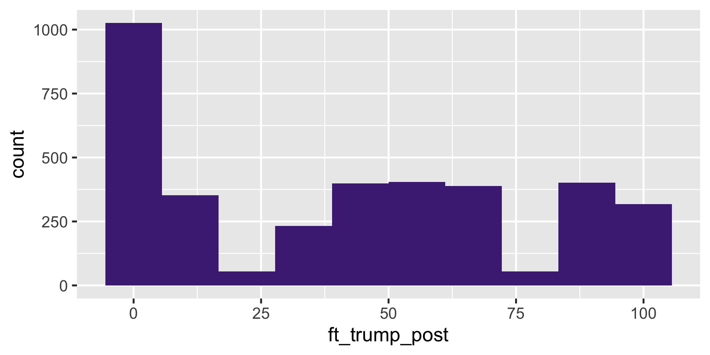
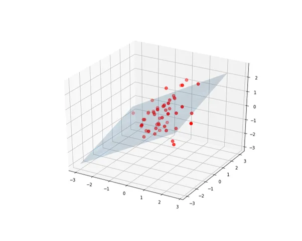
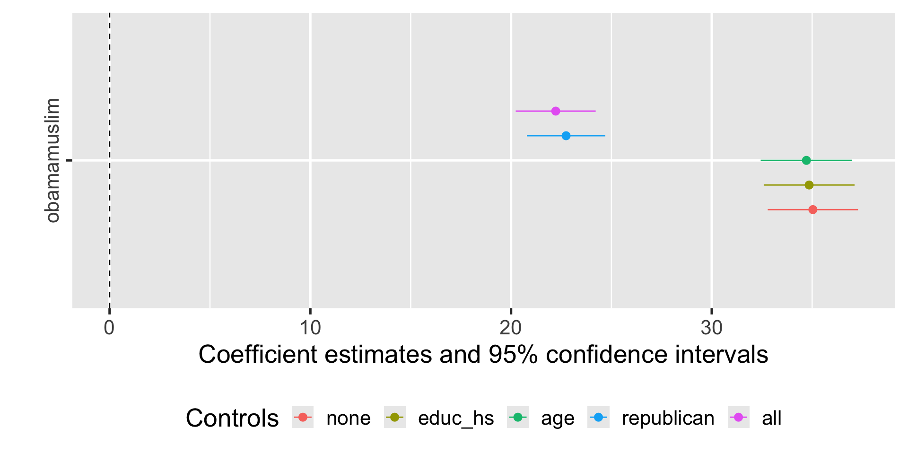

| Y | X |
|---|---|
| Outcome variable | Explanatory variable |
| Response variable | Predictor variable |
| Dependent variable | Independent variable |
| Thing you want to explain | Thing you use to explain |
Large N
POLI SCI 210
Introduction to Empirical Methods in Political Science
Be ready for next week!
NO EMPS CHAPTER ASSIGNED
Lecture reading
Huntinton-Klein, Nick. 2022. The Effect: An Introduction to Research Design and Causality. Chapman & Hall. Chapter 18
Cattaneo, Matias D., Nicolás Idrobo, and Rocío Titiunik. 2020. A Practical Introduction to Regression Discontinuity Designs: Foundations. Cambridge University Press. Chapters 1-4
Discussion section (write critique about one only)
García-Montoya, Laura, Ana Arjona, and Matthew Lacombe. 2022. “Violence and Voting in the United States: How School Shootings Affect Elections.” American Political Science Review 116 (3): 807-826
Saab, Andrew. 2026. “Fickle loyalties: Intragroup competition in open list elections.” Electoral Studies
Last week
Experiments to learn about cause and effect
Broadly: Summarizing relationships between two variables (difference in means)
This week: A more general method to summarize relationships between two (or more) variables
Tuesday: Bivariate relationships
Thursday: Multivariate relationships
An experiment has two variables
Y: Observed outcome
D: Treatment assignment (0: control, 1: treatment)
Y can be any kind of variable (numerical, categorical)
D is categorical because it denotes group membership
More general names
More general names
| Y | X |
|---|---|
| Outcome variable | Explanatory variable |
| Response variable | Predictor variable |
| Dependent variable | Independent variable |
| Thing you want to explain | Thing you use to explain |
X and Y can now be any type (numerical, categorical)
That means we can’t just compare means
Example

How to summarize?

Connect with a line

Maybe smoother?
A straight line?

Straight lines are good
They can be written as a linear equation
\[ y = mx + b \]
| \(y\) | Outcome variable |
| \(x\) | Explanatory variable |
| \(m\) | Slope (\(\frac{\text{rise}}{\text{run}}\)) |
| \(b\) | y-intercept |
This is the smallest number of parameters to draw a line
Slopes and intercepts
\(y = 2x - 1\)

Slopes and intercepts
\(y = 2x - 1\)

\(y = -0.5x + 6\)

We can think of intercept and slope as estimands or inferential targets
Drawing lines in statistics
\[ y = mx + b \]
Drawing lines in statistics
\[ \widehat{y} = \widehat{\beta}_0 + \widehat{\beta}_1 x_1 \]
| \(y\) | \(\widehat{y}\) | Outcome variable |
| \(x\) | \(x_1\) | Explanatory variable |
| \(m\) | \(\widehat{\beta}_1\) | Slope |
| \(b\) | \(\widehat{\beta}_0\) | y-intercept |
What are we doing?
Before: Assume there is a true parameter that we do not observe (e.g. population mean, ATE)
Now: Assume there is a true line that best describes the relationship between X and Y
There is a best linear predictor that we want to estimate
Which line is a better summary?

More formally
The best linear predictor is the line that minimizes the distance of each observation to the line
That distance is known as residual or error
Visualizing residuals

Visualizing residuals
More formally
The best linear predictor is the line that minimizes the distance of each observation to to the line
That distance is know as a residual or error
\[ e_i = (y_i - \widehat y_i) \]
More formally
The best linear predictor is the line that minimizes the distance of each observation to to the line
That distance is know as a residual or error
\[ e_i = (y_i - (b_0 + b_1 x_{1i})) \]
Minimizing residuals
We want to find a vector of coefficients (\(\widehat \beta_0\), \(\widehat \beta_1\)) that minimizes the sum of squared residuals
\[ SSR = \sum_{i=1}^n e_i^2 \]
We could try many lines until we find the the smallest SSR
Or use a method called Ordinary Least Squares (OLS)
OLS regression
Estimand
\(\alpha = E[Y] - \frac{\text{Cov}[X,Y]}{V[X]}E[X] \qquad \beta = \frac{\text{Cov}[X,Y]}{V[X]}\)
Estimator
\(\widehat\alpha = \overline Y - \frac{\overline{XY} - \overline{X} \cdot \overline{Y}}{\overline{X^2} - \overline{X}^2} \overline{X} \qquad \widehat{\beta} = \frac{\overline{XY} - \overline{X} \cdot \overline{Y}}{\overline{X^2} - \overline{X}^2}\)
Back to cookies
\[ \widehat{y} = \widehat \beta_0 + \widehat \beta_1 x_1 \]
Back to cookies
\[ \widehat{\text{happiness}} = \beta_0 + \beta _1 \text{cookies} \]
Back to cookies
\(\widehat{\text{happiness}} = \beta_0 + \beta_1 \text{cookies}\)
Back to cookies
\(\widehat{\text{happiness}} = \beta_0 + \beta_1 \text{cookies}\)

Back to cookies
\(\widehat{\text{happiness}} = \beta_0 + \beta_1 \text{cookies}\)

| happinness | |
|---|---|
| (Intercept) | 1.100* |
| (0.470) | |
| cookies | 0.164+ |
| (0.076) | |
| Num.Obs. | 10 |
| R2 | 0.368 |
| + p < 0.1, * p < 0.05, ** p < 0.01, *** p < 0.001 |
Back to cookies
\(\widehat{\text{happiness}} = \beta_0 + \beta_1 \text{cookies}\)

| happinness | |
|---|---|
| (Intercept) | 1.100* |
| (0.470) | |
| cookies | 0.164 |
| (0.076) | |
| Num.Obs. | 10 |
| R2 | 0.368 |
| * p < 0.05 |
Back to cookies
\(\widehat{\text{happiness}} = 1.10 + 0.16 \cdot \text{cookies}\)

| happinness | |
|---|---|
| (Intercept) | 1.100* |
| (0.470) | |
| cookies | 0.164 |
| (0.076) | |
| Num.Obs. | 10 |
| R2 | 0.368 |
| * p < 0.05 |
Back to cookies
\(\widehat{\text{happiness}} = 1.10 + 0.16 \cdot \text{cookies}\)

| happinness | |
|---|---|
| (Intercept) | 1.100* |
| (0.470) | |
| cookies | 0.164 |
| (0.076) | |
| Num.Obs. | 10 |
| R2 | 0.368 |
| * p < 0.05 |
On average
Back to cookies
\(\widehat{\text{happiness}} = 1.10 + 0.16 \cdot \text{cookies}\)

| happinness | |
|---|---|
| (Intercept) | 1.100* |
| (0.470) | |
| cookies | 0.164 |
| (0.076) | |
| Num.Obs. | 10 |
| R2 | 0.368 |
| * p < 0.05 |
On average, one additional cookie
Back to cookies
\(\widehat{\text{happiness}} = 1.10 + 0.16 \cdot \text{cookies}\)

| happinness | |
|---|---|
| (Intercept) | 1.100* |
| (0.470) | |
| cookies | 0.164 |
| (0.076) | |
| Num.Obs. | 10 |
| R2 | 0.368 |
| * p < 0.05 |
On average, one additional cookie increases happiness by 0.16 points
Regression and correlation
Informally, we use regression coefficients (slopes) to determine whether two variables are correlated
Technically, they are related but on a different scale
Regression coefficient: \(\beta = \frac{\text{Cov}[X,Y]}{V[X]}\)
Correlation: \(\rho = \frac{\text{Cov}[X,Y]}{SD[X] SD[Y]}\)
Regression and correlation
Informally, we use regression coefficients (slopes) to determine whether two variables are correlated
Technically, they are related but on a different scale
Regression coefficient: \(\beta = \frac{\text{Cov}[X,Y]}{V[X]}\) \(\Rightarrow\) in units of Y (happiness)
Correlation: \(\rho = \frac{\text{Cov}[X,Y]}{SD[X] SD[Y]}\)
Regression and correlation
Informally, we use regression coefficients (slopes) to determine whether two variables are correlated
Technically, they are related but on a different scale
Regression coefficient: \(\beta = \frac{\text{Cov}[X,Y]}{V[X]}\) \(\Rightarrow\) in units of Y (happiness)
Correlation: \(\rho = \frac{\text{Cov}[X,Y]}{SD[X] SD[Y]}\) \(\Rightarrow\) [-1, 1] scale
With cookies again
\(\widehat{\text{happiness}} = 1.10 + 0.16 \cdot \text{cookies}\)

On average, one additional cookie increases happiness by 0.16 points
Corresponds to a correlation of 0.61
Helpful for comparison
Is 0.16 happiness points per cookie a lot?
We cannot tell without a point of reference
But correlation is a reference on its own:
| Absolute magnitude | Effect |
|---|---|
| 0.1 | Small |
| 0.3 | Moderate |
| 0.5 | Large |
Summary
Lines are a convenient way to summarize bivariate relationships
We can treat line-fitting as an estimation problem
OLS regression has good statistical properties (minimizes SSR)
Regression and correlation are related but different
Many different kinds of regression models!
Large N
POLI SCI 210
Introduction to Empirical Methods in Political Science
Last time
Bivariate regression as a method to understand relationship between X and Y
Today: More variables! (and why you would want that)
Multivariate regression
Running example: ANES 2016 data
Outcome variable
ft_trump_post: Post-election feeling thermometer toward Trump

Running example: ANES 2016 data
Explanatory variables
women_at_home: Believe women should stay homeobamamuslim: Believe Obama is a Muslimage: Age in yearsage0: Age in years (starting with 18 = 0)educ_hs: Any kind of post-secondary educationrepublican: Identifies with Republican party (including leaners)
Running example: ANES 2016 data
# A tibble: 4,270 × 7
ft_trump_post women_at_home obamamuslim age age0 educ_hs republican
<dbl> <dbl> <dbl> <dbl> <dbl> <dbl> <dbl>
1 85 0 0 29 11 1 1
2 60 0 1 26 8 1 1
3 70 1 1 23 5 1 0
4 60 1 0 58 40 1 1
5 15 0 1 38 20 1 0
6 65 0 0 60 42 1 1
7 50 0 0 58 40 0 0
8 85 1 1 56 38 1 0
9 70 0 0 45 27 1 1
10 60 0 0 30 12 1 0
# ℹ 4,260 more rowsRegression as conditional means
\(\widehat{\texttt{ft_trump_post}} = \beta_0 + \beta_1 \cdot \texttt{obamamuslim}\)
| term | estimate | std.error | p.value |
|---|---|---|---|
| (Intercept) | 32.17 | 0.61 | 0 |
| obamamuslim | 35.04 | 1.15 | 0 |
Regression as conditional means
\(\widehat{\texttt{ft_trump_post}} = 32.17 + 35.04 \cdot \texttt{obamamuslim}\)
| term | estimate | std.error | p.value |
|---|---|---|---|
| (Intercept) | 32.17 | 0.61 | 0 |
| obamamuslim | 35.04 | 1.15 | 0 |
What is the average feeling thermometer for someone who does not believe Obama is a Muslim?
What is the average feeling thermometer for someone who does believe Obama is a Muslim?
What can we say with regression?
Level 1: Description of conditional means
Level 2: Statistical inference (needs CIs or p-values)
Level 3: Causal inference (needs assumptions)
What do we need to assume to make causal claims?
Strategy 1: Random assignment
If treatment \(D\) is randomly assigned
- Potential outcomes are independent from treatment: \((Y(0), Y(1)) \perp \!\!\! \perp D\)
- ATE \(E[\tau_i]\) is point-identified
- Estimate with difference in means between treatment and control
- Bivariate regression yields the same result
What if random assignment is not possible?
Return to ANES 2016
We found that those who believe Obama is a Muslim were, on average, 35 points more favorable toward Trump
We want to claim this is because:
\[ \text{Beliefs about ethnicity} \Rightarrow \text{Support for Trump} \]
What prevents us from making such a claim?
- Reverse causation
- Omitted variable bias
- Selection bias
Strategy 2: Ignorability
We want to be able to ignore the role of potential confounders
We usually do this by presenting a controlled comparison
So we can say that our explanatory variable is distributed in a way that is conditionally independent
Conditional independence: \((Y(0), Y(1)) \perp \!\!\! \perp D | \mathbf{X}\)
We now distinguish between:
- Explanatory variable (D)
- Control variables or covariates (X)
Another way to think about it
There is a causal effect to be found in observational data
But without random assignment, the effect is contaminated by potential confounders
We want to adjust or control for these variables
Multivariate regression
The linear model setup is flexible
\[\widehat{y} = \widehat \beta_0 + \widehat \beta_1 x_1 + \widehat \beta_2 x_2 + \ldots + \widehat \beta_K x_K\]
You can technically put whatever you want in a regression as long as \(\text{observations} > \text{variables}\)
But for statistical or causal inference, anything with more than 2-3 control variables doesn’t make much sense
Increasing dimensions

Increasing dimensions
More dimensions \(\rightarrow\) more likely to see:
Extrapolation: Fitting line beyond actual range
Interpolation: Gaps within actual range
Illusion of learning from empty space!
Practice
We argue ethnicity beliefs \(\Rightarrow\) support Trump
Some alternative explanations:
- Differences in education
- Differences in age
- Partisan motivated reasoning
Models
Estimate the following models:
\(\widehat{\texttt{ft_trump_post}} = \beta_0 + \beta_1 \texttt{obamamuslim}\) (Baseline)
\(\widehat{\texttt{ft_trump_post}} = \beta_0 + \beta_1 \texttt{obamamuslim} + \beta_2 \texttt{educ_hs}\)
\(\widehat{\texttt{ft_trump_post}} = \beta_0 + \beta_1 \texttt{obamamuslim} + \beta_2 \texttt{age}\)
\(\widehat{\texttt{ft_trump_post}} = \beta_0 + \beta_1 \texttt{obamamuslim} + \beta_2 \texttt{republican}\)
\(\widehat{\texttt{ft_trump_post}} = \beta_0 + \beta_1 \texttt{obamamuslim} + \beta_2 \texttt{educ_hs} +\\ \beta_3 \texttt{age} + \beta_4 \texttt{republican}\)
Results
| (1) | (2) | (3) | (4) | (5) | |
|---|---|---|---|---|---|
| (Intercept) | 32.168* | 32.763* | 23.090* | 20.367* | 21.338* |
| (0.611) | (2.104) | (1.574) | (0.581) | (2.157) | |
| obamamuslim | 35.037* | 34.852* | 34.715* | 22.742* | 22.225* |
| (1.147) | (1.154) | (1.162) | (0.996) | (1.016) | |
| educ_hs | -0.557 | -6.216* | |||
| (2.135) | (1.788) | ||||
| age | 0.185* | 0.101* | |||
| (0.030) | (0.025) | ||||
| republican | 37.533* | 37.539* | |||
| (0.913) | (0.933) | ||||
| Num.Obs. | 3632 | 3601 | 3536 | 3616 | 3496 |
| R2 | 0.204 | 0.203 | 0.214 | 0.459 | 0.462 |
| * p < 0.05 | |||||
Results
| (1) | (2) | (3) | (4) | (5) | |
|---|---|---|---|---|---|
| (Intercept) | 32.168* | 32.763* | 23.090* | 20.367* | 21.338* |
| (0.611) | (2.104) | (1.574) | (0.581) | (2.157) | |
| obamamuslim | 35.037* | 34.852* | 34.715* | 22.742* | 22.225* |
| (1.147) | (1.154) | (1.162) | (0.996) | (1.016) | |
| educ_hs | -0.557 | -6.216* | |||
| (2.135) | (1.788) | ||||
| age | 0.185* | 0.101* | |||
| (0.030) | (0.025) | ||||
| republican | 37.533* | 37.539* | |||
| (0.913) | (0.933) | ||||
| Num.Obs. | 3632 | 3601 | 3536 | 3616 | 3496 |
| R2 | 0.204 | 0.203 | 0.214 | 0.459 | 0.462 |
| * p < 0.05 | |||||
Results
| (1) | (2) | (3) | (4) | (5) | |
|---|---|---|---|---|---|
| (Intercept) | 32.168* | 32.763* | 23.090* | 20.367* | 21.338* |
| (0.611) | (2.104) | (1.574) | (0.581) | (2.157) | |
| obamamuslim | 35.037* | 34.852* | 34.715* | 22.742* | 22.225* |
| (1.147) | (1.154) | (1.162) | (0.996) | (1.016) | |
| educ_hs | -0.557 | -6.216* | |||
| (2.135) | (1.788) | ||||
| age | 0.185* | 0.101* | |||
| (0.030) | (0.025) | ||||
| republican | 37.533* | 37.539* | |||
| (0.913) | (0.933) | ||||
| Num.Obs. | 3632 | 3601 | 3536 | 3616 | 3496 |
| R2 | 0.204 | 0.203 | 0.214 | 0.459 | 0.462 |
| * p < 0.05 | |||||
Results
| (1) | (2) | (3) | (4) | (5) | |
|---|---|---|---|---|---|
| (Intercept) | 32.168* | 32.763* | 23.090* | 20.367* | 21.338* |
| (0.611) | (2.104) | (1.574) | (0.581) | (2.157) | |
| obamamuslim | 35.037* | 34.852* | 34.715* | 22.742* | 22.225* |
| (1.147) | (1.154) | (1.162) | (0.996) | (1.016) | |
| educ_hs | -0.557 | -6.216* | |||
| (2.135) | (1.788) | ||||
| age | 0.185* | 0.101* | |||
| (0.030) | (0.025) | ||||
| republican | 37.533* | 37.539* | |||
| (0.913) | (0.933) | ||||
| Num.Obs. | 3632 | 3601 | 3536 | 3616 | 3496 |
| R2 | 0.204 | 0.203 | 0.214 | 0.459 | 0.462 |
| * p < 0.05 | |||||
Results
| (1) | (2) | (3) | (4) | (5) | |
|---|---|---|---|---|---|
| (Intercept) | 32.168* | 32.763* | 23.090* | 20.367* | 21.338* |
| (0.611) | (2.104) | (1.574) | (0.581) | (2.157) | |
| obamamuslim | 35.037* | 34.852* | 34.715* | 22.742* | 22.225* |
| (1.147) | (1.154) | (1.162) | (0.996) | (1.016) | |
| educ_hs | -0.557 | -6.216* | |||
| (2.135) | (1.788) | ||||
| age | 0.185* | 0.101* | |||
| (0.030) | (0.025) | ||||
| republican | 37.533* | 37.539* | |||
| (0.913) | (0.933) | ||||
| Num.Obs. | 3632 | 3601 | 3536 | 3616 | 3496 |
| R2 | 0.204 | 0.203 | 0.214 | 0.459 | 0.462 |
| * p < 0.05 | |||||
Results
| (1) | (2) | (3) | (4) | (5) | |
|---|---|---|---|---|---|
| (Intercept) | 32.168* | 32.763* | 23.090* | 20.367* | 21.338* |
| (0.611) | (2.104) | (1.574) | (0.581) | (2.157) | |
| obamamuslim | 35.037* | 34.852* | 34.715* | 22.742* | 22.225* |
| (1.147) | (1.154) | (1.162) | (0.996) | (1.016) | |
| educ_hs | -0.557 | -6.216* | |||
| (2.135) | (1.788) | ||||
| age | 0.185* | 0.101* | |||
| (0.030) | (0.025) | ||||
| republican | 37.533* | 37.539* | |||
| (0.913) | (0.933) | ||||
| Num.Obs. | 3632 | 3601 | 3536 | 3616 | 3496 |
| R2 | 0.204 | 0.203 | 0.214 | 0.459 | 0.462 |
| * p < 0.05 | |||||
Visualizing
Everything else constant
Plug-in coefficients in equations:
\(\widehat{\texttt{ft_trump_post}} = 32.17 + 35.04 \cdot \texttt{obamamuslim}\)
\(\widehat{\texttt{ft_trump_post}} = 32.76 + 34.85 \cdot \texttt{obamamuslim} -0.56 \cdot \texttt{educ_hs}\)
\(\widehat{\texttt{ft_trump_post}} = 23.09 + 34.72 \cdot \texttt{obamamuslim} + 0.19 \cdot \texttt{age}\)
\(\widehat{\texttt{ft_trump_post}} = 20.367 + 22.74 \cdot \texttt{obamamuslim} + 37.53 \cdot \texttt{republican}\)
\(\widehat{\texttt{ft_trump_post}} = 21.34 + 22.23 \cdot \texttt{obamamuslim} -6.22 \cdot \texttt{educ_hs} +\\ 0.10 \cdot \texttt{age} + 37.54 \cdot \texttt{republican}\)
Coefficients now need to be interpreted as marginal means or marginal slopes
These only make sense if you think at least one variable is a focal point
Interactions
What if we believed the effect of obamamuslim varies depending on attitudes about gender roles?
Model: \(\widehat{\texttt{ft_trump_post}} = \beta_0 + \beta_1 \texttt{obamamuslim} + \beta_2 \texttt{women_at_home} + \\ \beta_3 \texttt{obamamuslim} \times \texttt{women_at_home}\)
Interactions
Model: \(\widehat{\texttt{ft_trump_post}} = \beta_0 + \beta_1 \texttt{obamamuslim} + \beta_2 \texttt{women_at_home} + \\ \beta_3 \texttt{obamamuslim} \times \texttt{women_at_home}\)
| term | estimate | std.error | p.value |
|---|---|---|---|
| (Intercept) | 27.74 | 0.73 | 0.00 |
| obamamuslim | 34.95 | 1.51 | 0.00 |
| women_at_home | 14.17 | 1.30 | 0.00 |
| interaction | -4.74 | 2.31 | 0.04 |
Summary
Regression is a way to estimate conditional means
Multivariate regression needs “everything else constant” interpretation
Coefficients are now marginal means or marginal slopes
Only makes sense from a causal inference perspective